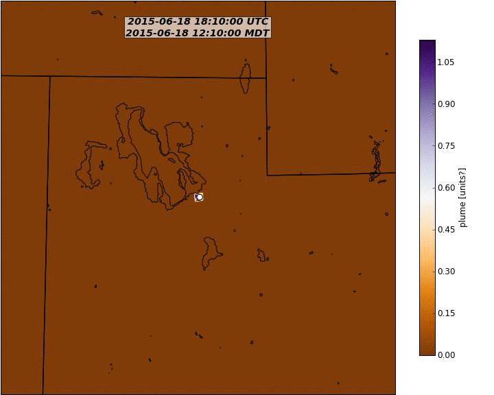
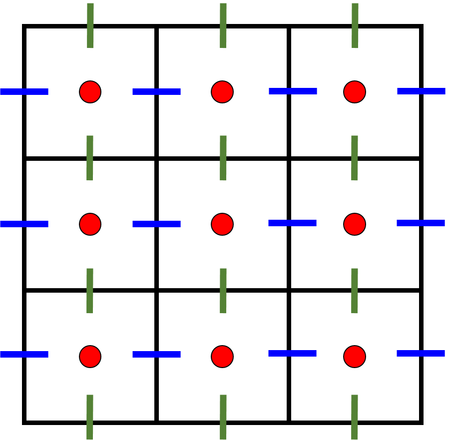
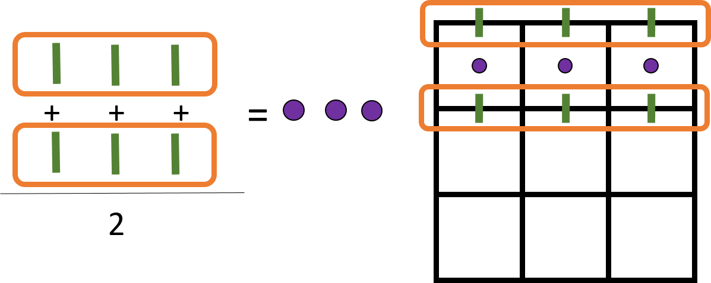
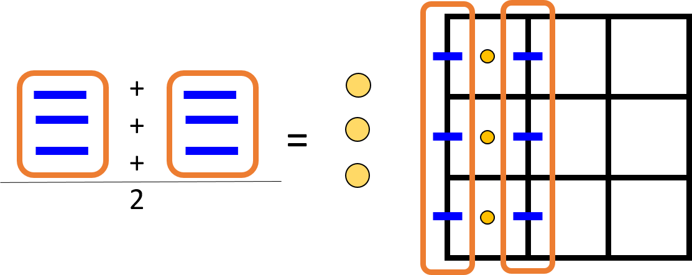
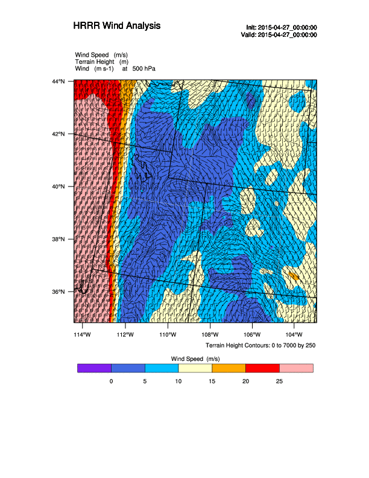

- WRF Browser
- Tracer Plume
- Convert Staggered Grid to Mass Points
- Plots on Multiprocessors
- NCL
- Convert ETA levels to Pressure Coordinate
- Lukes' Code (Good starting place)
- WRF Browser (Windows) <-- Yeah, check this out!
Under Construction
check back later for updates and new examples.
Someday when I get around to it I'll post my codes on GitHub Back to Top
WRF Browser
WRF Browser is a Windows application that lets you browser WRF variables, plot variable field on a map, export variable to KML, and create time series plots for a point.
Download the latest version here and join the email list for new updates. This is still being produced and my experience is that if you report a bug they get it fixed rather quickly. Back to Top
Plotting High Frequency Tracer Plumes
Python code to read data from an auxhist23_d01_2015-06-18_00:00:00 file
Then, in a Linux terminal, use the convert command to convert all the images into an animated GIF.
Below is an example of a plume with WRF output every 10 minutes.

Back to Top
Converting Staggered Grid Variables to Mass Points (by averaging)
WRF uses the Arakawa C Grid. Mass point variables like temperature, humidity, etc. are calculated for the inside of the gird box. Advection variables like U and V winds are calculated on a staggered grid for the box edges to represent flow into and out of the box.
If you're dealing with WRF output data on certain model levels rather than surface variables you it's likely you'll need to convert the staggered grid variables to the mass points. One reason you'd want to do this is if you want to make wind barbs.

To the left is a 3x3 Arakawa C-Grid.
- Red Dots: mass point (3x3)
- Blue Line: U staggered (3x4)
- Green Line: V staggered (4x3)
The U and V array size will be one column or row bigger than your mass point array. You could get away with trimming the U and V array to the same size as the mass point array and then plot the U and V winds on the mass point lat/lon coordinates. This introduces a small error half the size of your grid spacing (4 km grid box would cause a 2 km error in wind barb placement). That is sloppy, and we can do better. So we reduce the staggered grid to a mass point grid by averaging the values on the left-right side of the box to get an average U vector at the mass point and then average the top-bottom value to get the V average value. Get it? Here's some more details...
stagger_to_mass.py
Two simple python functions to convert the staggered grid values (U, V, winds, and lat/lons) to the mass point.
I average the outside coordinates to approximate the masspoint value in the middle.
Vstagger_to_mass(V)
Average the top and bottom column values for each box. Perform the following calculation on the array and loop through all rows.

Ustagger_to_mass(U)
Average the left and right row values for each box. Perform the following calculation on the array and loop through all columns. 
Each U and V variable has a coorespoinding XLAT_U, XLONG_U, XLAT_V, and XLONG_V variable as well.
Note: difference between XLAT_U and XLAT is small, on the order of 10e-5. (same with XLAT_V, XLONG_U, and XLONG_V). This means
you only have to calcuate the lat/lon from either the U or V variable to get the approximate masspoint lat/lon.
Difference in Umass and Ustagger can bigger, I've seen values between 0-5. We expect some difference here.
Back to Top
Python Multiprocessing: Lots of plots fast
I find myself making lots of the same kinds of plots but for different wrfout times. How do you make 400 images real quick? Use Python's Multiprocessing module.
How does multiprocessing work? Your computer has multiple cores, or brains, that it can do work on. When you run a typical Python script it will send that job to one processor. With multiprocessing it will break up parts of the code and solve each piece on different processors. There is a module called multi threading, but multi threading probably wont speed up making plots too much since for reasons explained in the video below. I like to use multiprocessing and the pool function to split the code up among the working processors. Check out the YouTube video for a bit more description...
As an example, check out the below (incomplete) script for an example of the parts and pieces. On 32 processors available on CHPC machines, I was able to make 475 plots in less than a minute rather than the hour it took to run in serial (one processor). Back to Top
Basics of using netCDF data in Python
These are some basic snippets of code for dealing with netCDF in Python.
Back to Top
Plotting WRF data with NCAR Command Language (NCL)
Converting WRF vertical coordinates to pressure surfaces is not a trivial task. I needed to plot winds and other output on pressure surfaces rather than ETA coordinates, so I use NCL to make these plots. There is a built in function that interpolates the WRF output onto pressure coordinates. I'll share a python function when I get around to building my own. For now, I suggest using NCL.
You can download the current release of NCL here. I found the tutorial steps were simple to follow and complete. I managed to get NCL running without any issues in about fifteen minutes.
These example scripts are a great place to start (click here) I would suggest going through each of the basic plots and surface plots just to get a feel of how the language works.
After making some edits to the pressure surface plots I was able to create this animation of winds on
a 500 mb pressure level. Shown are the wind barbs and the color fill is wind speed. The black contour lines shows
the terrain elevation.

Back to Top